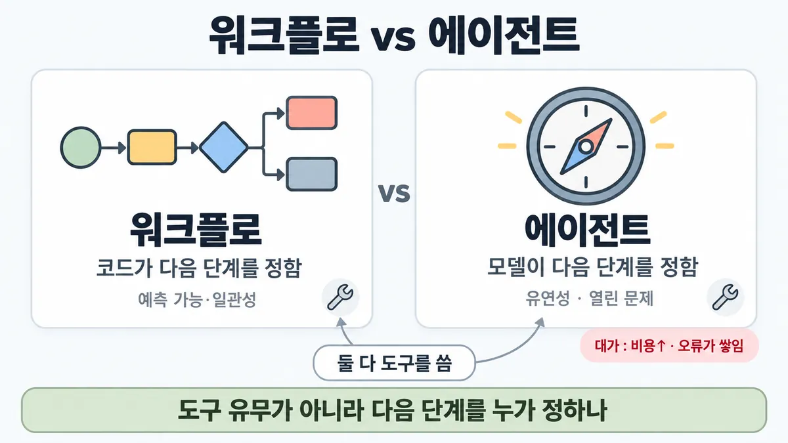
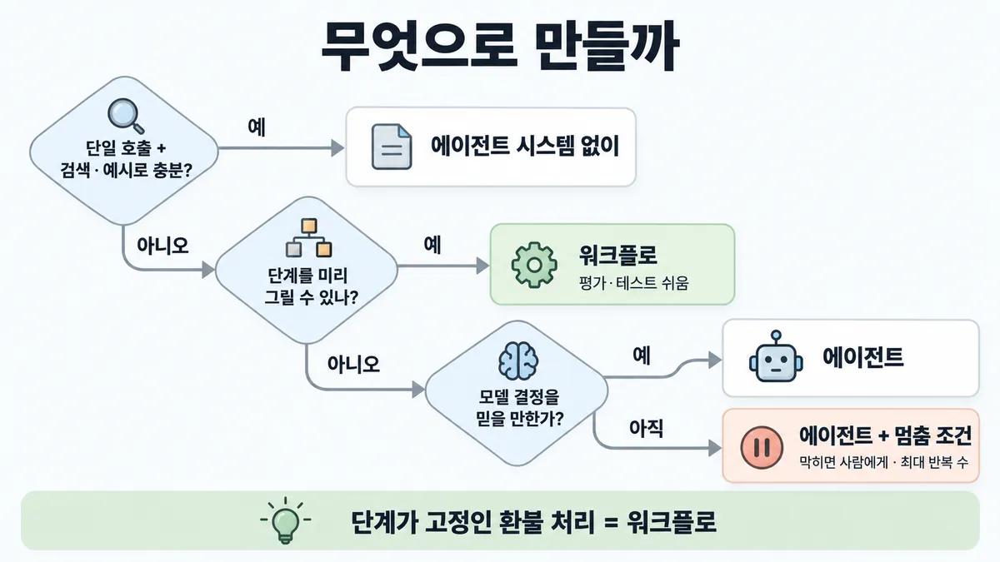

◆ 워크플로 vs 에이전트
왜 배우나 — 시험이 요구하는 것
시험 목표 1.3 구조 패턴 고르기 · D1 설계 17%Select appropriate architectural patterns (workflow, agentic, augmented LLM)
이 개념으로 푸는 판단 (할 수 있어야 하는 것)
- 1.3① 도구를 부르면 에이전트인가? — 워크플로 vs 에이전트 가르기
한눈에


ELI5
요리책을 보고 만들지, 냉장고를 열어 보고 그때그때 정할지 고르는 거예요.
- 만들 음식이 정해져 있으면 요리책 순서대로 하는 게 제일 안전해요.
- 뭐가 들어 있을지 모르는 냉장고면 열어 보고 다음 할 일을 정해야 해요.
- 그때그때 정하면 더 오래 걸리고, 가끔 이상한 음식이 나와요.
- 칼을 몇 개 쓰는지는 상관없어요. 순서를 누가 정하는지가 중요해요.
개념 설명
원리
가르는 축은 하나
- 다음 단계를 누가 정하나. 코드가 미리 정해 두면 워크플로, 모델이 실행 중에 정하면 에이전트.
- 도구 호출은 둘 다 함. 워크플로 안의 각 호출도 검색(retrieval)·도구·메모리가 붙은 LLM(증강 LLM)을 씀 → "도구를 쓴다"는 가르는 기준이 아님.
워크플로가 이기는 이유
- 경로가 코드에 있음 → 중간 단계에 코드 검사(gate)를 넣을 수 있고, 매 단계가 무엇을 할지 알아서 평가·테스트가 쉬움.
- 한 호출이 한 가지 일에 집중 → 대개 정확도가 오름.
- 대신 유연성이 없음 : 미리 그린 입력·단계 밖의 일은 못 받음.
에이전트가 이기는 이유
- 필요한 단계 수를 미리 알 수 없는 열린 문제 : 매 걸음 도구 결과(ground truth)를 보고 다음을 정함.
- 예상 못 한 상황에서 도구를 뜻밖의 방식으로 묶어 풀고, 필요하면 사용자에게 되물음.
- 대신 비용↑ · 지연(latency)↑ · 오류가 쌓임 · 완료율↓ · 계측·평가가 어려움 → 모델 결정을 어느 정도 믿을 수 있어야 하고, 샌드박스 테스트·가드레일·멈춤 조건이 따라붙음.
순서
- 더 단순한 것부터 : 단일 LLM 호출 + 검색·예시로 대개 충분. 에이전트 시스템을 아예 안 만드는 것도 답.
- 복잡도는 결과가 나아진다는 증거가 있을 때만.
핵심 질문 두 개
- 이 일의 단계를 지금 종이에 다 그릴 수 있나?
- 못 그린다면, 모델이 정한 다음 걸음을 믿고 맡길 만한 안전장치가 있나?
규칙과 판단


갈림길
더 단순한 걸로 되나 [1.3①] [1.3③]
에이전트 시스템 없이
단일 LLM 호출 + 검색(retrieval)·예시로 대개 충분 ✓ 확인
다음 물음 — 단계를 미리 그릴 수 있나?
누가 다음 단계를 정하나 [1.3①]
워크플로
미리 정한 코드 경로. 예측 가능·일관성 · 한 단계씩 집중 · 평가·테스트 쉬움 ✓ 확인
에이전트
필요한 단계 수를 예측하기 어렵거나 불가능 · 고정 경로를 하드코딩 못 함 · 모델 결정을 어느 정도 믿음 ✓ 확인 · 샌드박스에서 충분히 테스트 + 가드레일 ✓ 확인
에이전트 + 막히면 사람에게 · 멈춤 조건
에이전트는 비용↑ · 오류가 쌓일 수 있음 → 샌드박스에서 충분히 테스트 + 가드레일 · 체크포인트·막히면 사람에게 · 멈춤 조건(최대 반복 수) ✓ 확인
무엇을 내주나 [1.3①]
유연성
도구를 뜻밖의 방식으로 묶음 · 예상 못 한 상황 처리 ✓ 확인
비용·오류·평가
비용↑ · 오류가 쌓일 수 있음 · 과제 완료율↓ · 계측·평가 어려움 ✓ 확인
흐름
그림 속 이름·금액·시간·토큰 수는 예시예요. 공식 한도·동작은 카드 본문 값이 기준.
장면 글로 보기
칸 : 코드 → 모델 → 도구
질문 : 다음 단계는 누가 정할까?
① 워크플로 ✓
- 시작 : 코드 — 쪽지 : 환불 요청 #5521 / 순서: 자격 → 정책 → 처리 → 알림
- 경로 : 코드 → 모델 : 미리 정한 코드 경로 — 쪽지 : 1단계: 자격 확인 / (순서는 코드가 정함)
- 판정 : 모델 → 코드 — 쪽지 : { 자격: true }
- 검사 : 코드 : 중간 단계에 코드 검사(gate) — 쪽지 : gate: 자격 = true / → 2단계 정책 확인
- 끝 : 코드가 다음 단계를 정함 — 예측 가능·일관성
② 에이전트 ✓
- 시작 : 코드 — 말 : “결제가 가끔 두 번 나가요, 원인 찾아 줘”
- 넘김 : 코드 → 모델 : 목표와 도구만 줌 — 쪽지 : 목표 + 도구 목록 / 다음 단계는 모델이
- 결정 : 모델 → 도구 : 모델이 스스로 도구를 정함 — 쪽지 : search_logs("중복 결제")
- 결과 : 도구 → 모델 : 매 걸음 ground truth(도구 결과) — 쪽지 : 로그 2건: 재시도가 / 결제를 한 번 더 보냄
- 끝 : 필요한 단계 수를 예측하기 어려운 열린 문제
③ 도구를 부르니 에이전트? ≠
- 시작 : 코드 — 쪽지 : 환불 요청 #5521 / 순서: 자격 → 정책 → 처리 → 알림
- 경로 : 코드 → 모델 : 미리 정한 코드 경로 — 쪽지 : 3단계: 처리 / (순서는 코드가 정함)
- 호출 : 모델 → 도구 : 도구를 여러 개 부름 — 쪽지 : cancel_payment(5521) / send_mail(고객)
- 끝 : 도구를 불러도 순서는 코드가 정함 — 도구 유무가 아니라 다음 단계를 누가 정하나
규칙 원문 갈림 기준 (갈림길로 그린 규칙)
갈림 기준
다음 단계를 누가 정하나 (도구 유무 X) ✓ 확인
- 워크플로 = LLM·도구를 미리 정한 코드 경로로 엮음 → 코드가 다음 단계를 정함. 잘 정의된 일에 예측 가능·일관성 ✓ 확인
- 에이전트 = LLM 이 스스로 과정·도구 사용을 정함 → 유연성·모델 주도 결정이 필요할 때 ✓ 확인
에이전트를 쓰는 때 : 필요한 단계 수를 예측하기 어렵거나 불가능 · 고정 경로를 하드코딩 못 함 · 모델 결정을 어느 정도 믿음 ✓ 확인
대가 : 에이전트 시스템은 지연(latency)·비용을 내고 성능을 얻음. 에이전트는 비용↑ · 오류가 쌓일 수 있음 → 샌드박스에서 충분히 테스트 + 가드레일 ✓ 확인
- 워크플로 = 한 단계씩 집중 → 대개 정확도↑ · 평가·테스트 훨씬 쉬움 / 에이전트 = 과제 완료율↓ · 계측·평가 어려움 · 동작 예측 어려움 ✓ 확인 (Skilljar)
에이전트 운전 : 매 걸음 환경에서 ground truth(도구 결과·코드 실행)로 진척 확인 · 체크포인트·막힘에서 사람에게 · 멈춤 조건(최대 반복 수) ✓ 확인
- 에이전트 실체 = 환경 피드백을 보며 도구를 쓰는 루프의 LLM → 구현은 대개 단순, 도구 세트·문서가 핵심 ✓ 확인 → ■ 도구 설계 · 루프 제어 = ■ stop_reason 으로 분기
- 앱 UX 가 사용자를 정해진 작업 몇 개로 묶으면 워크플로 · 어떤 과제·값이 올지 모르면 에이전트 ✓ 확인 (Skilljar)
- 먼저 가장 단순한 해법. 단일 LLM 호출 + 검색·예시로 대개 충분, 복잡도는 결과가 나아질 때만 ✓ 확인 (어디서 멈추나 = 1.3③ 쪽)
- 워크플로 안에서 무엇을 고르나 = ■ 워크플로 5패턴 · 여러 에이전트로 갈지 = ◆ 단일 vs 멀티 에이전트
더 깊이 : 판단 규칙 · 상황 변수 (설명)
판단 규칙
| 조건 | 답 | 등급 | 근거 |
|---|---|---|---|
| 단일 호출 + 검색·예시로 충분 | 에이전트 시스템 없이 | ✓ 확인 | building-effective-agents en 18·20줄 |
| 단계를 미리 그릴 수 있음 · 잘 정의된 일 | 워크플로 | ✓ 확인 | building-effective-agents en 11·20줄 · Skilljar 287796 15줄 |
| 앱 UX 가 사용자를 정해진 작업 몇 개로 묶음 | 워크플로 | ✓ 확인 | Skilljar 287796 15줄 |
| 필요한 단계 수를 예측하기 어렵거나 불가능 · 고정 경로를 하드코딩 못 함 | 에이전트 | ✓ 확인 | building-effective-agents en 145줄 |
| 어떤 과제·값이 올지 모름 | 에이전트 | ✓ 확인 | Skilljar 287796 16줄 |
| 에이전트를 택함 | 매 걸음 ground truth 확인 · 체크포인트 · 멈춤 조건(최대 반복 수) · 샌드박스 테스트 + 가드레일 | ✓ 확인 | building-effective-agents en 137·147줄 |
| 둘 다 가능해 보임 | 되는 곳은 워크플로, 에이전트는 꼭 필요할 때만 | ✓ 확인 | Skilljar 287794 53줄 |
| 프레임워크를 쓸까 | LLM API 직접부터, 쓰면 밑단 코드를 이해 | ✓ 확인 | building-effective-agents en 33줄 |
상황 변수
| 변수 | 값 | 답 쪽 | 등급 | 근거 |
|---|---|---|---|---|
| 단계 | 고정 (자격 확인 → 정책 확인 → 처리 → 알림) | 워크플로 | ✓ 확인 | 판단 규칙 2 |
| 단계 | 입력 따라 수·종류가 바뀜 (반복 장애 원인 조사) | 에이전트 | ✓ 확인 | 판단 규칙 4 |
| 도구 수 | 많음 | 가르는 기준 아님 — 단계를 누가 정하나로 | ✓ 확인 | building-effective-agents en 43·51줄 (모든 호출이 증강 LLM) |
| 요구 | 예측 가능 · 감사 가능 · 일관성 | 워크플로 | ✓ 확인 | building-effective-agents en 20줄 |
| 요구 | 예상 못 한 요청 처리 · 유연한 사용자 경험 | 에이전트 | ✓ 확인 | Skilljar 287794 32~35줄 |
| 비용 여유 | 작음 · 호출량 많음 | 워크플로 쪽 (에이전트 토큰 = 채팅 대비 약 4배) | 계산 | 뒤집히는 때 2 |
| 모델 결정 신뢰 | 낮음 · 되돌리기 어려운 동작 | 에이전트여도 체크포인트·사람 확인 | ✓ 확인 | building-effective-agents en 137·145줄 |
| 평가 가능성 | 단계별 검사 필요 | 워크플로 (gate) | ✓ 확인 | building-effective-agents en 55줄 |
연습 문제
쇼핑몰 환불 처리는 늘 자격 확인 → 정책 확인 → 처리 → 알림 순서로 간다고정 경로. 단계마다 주문 조회 · 결제 취소 · 메일 발송 도구를 부른다. 팀은 "도구를 여러 개 부르니 에이전트로 만들자"고 한다. 무엇으로 만들까?
시험 대비
함정
- "도구를 여러 개 부르니 에이전트" → 도구 유무가 아니라 누가 다음 단계를 정하나. 워크플로 안의 호출도 도구를 씀 ✓ 확인
- 환불 처리(자격 확인 → 정책 확인 → 처리 → 알림)처럼 단계가 고정인 일에 에이전트 → 고정 경로 = 워크플로 ✓ 확인
- "고정 스키마 대량 변환에 에이전트" → 단계가 미리 그려지면 워크플로 ✓ 확인
- "강한 모델이니 자율 에이전트가 기본 업그레이드" → 복잡도는 결과가 나아질 때만 ✓ 확인
- "orchestrator-workers(지휘자-일꾼)는 모델이 하위작업을 정하니 에이전트" → 공식 분류는 워크플로 패턴 ✓ 확인
- "에이전트는 복잡한 프레임워크부터" → LLM API 직접부터, 많은 패턴이 코드 몇 줄 ✓ 확인
- "에이전트면 끝날 때까지 알아서" → 멈춤 조건(최대 반복 수) · 체크포인트 ✓ 확인
- "'에이전트' = 완전 자율만" → Anthropic 은 둘 다 agentic systems 로 묶고 구조로 가름 ✓ 확인
신호
"Workflows are systems where LLMs and tools are orchestrated through predefined code paths."
"Agents, on the other hand, are systems where LLMs dynamically direct their own processes and tool usage, maintaining control over how they accomplish tasks."
"Agents can be used for open-ended problems where it’s difficult or impossible to predict the required number of steps, and where you can’t hardcode a fixed path."
"Agentic systems often trade latency and cost for better task performance, and you should consider when this tradeoff makes sense."
"workflows offer predictability and consistency for well-defined tasks, whereas agents are the better option when flexibility and model-driven decision-making are needed at scale."
"The autonomous nature of agents means higher costs, and the potential for compounding errors."
"The general recommendation is to always focus on implementing workflows where possible, and only resort to agents when they are truly required." (Skilljar)
더 깊이 : 뒤집히는 때 · 오답 재료 (설명)
뒤집히는 때
1. 단계는 고정인데 갈래가 폭발
- 조건 : 문의 종류가 처음 5가지에서 70가지 넘게 늘고, 종류마다 필요한 조회·처리 순서가 달라짐.
- 판단 : 종류를 정확히 나눌 수 있으면 여전히 워크플로(routing · 라우팅). 종류를 미리 셀 수 없고 순서를 코드에 박아 둘 수 없게 되면 공식 조건("can't hardcode a fixed path")이 성립 → 에이전트 쪽.
- 등급 : 업계 일반 (경계선 숫자는 공식에 없음 · 조건 문장은 확인)
- 근거 : building-effective-agents en 76·145줄
2. 비용이 제약이면
- 조건 : 하루 1,200건, 채팅형 한 번 처리에 평균 3천 토큰.
- 계산 : 채팅형 = 1,200 × 3천 = 360만 토큰/일. 에이전트(채팅 대비 약 4배) = 약 1,440만 토큰/일. 늘어난 1,080만 토큰만큼 완료율·품질이 올라야 쓸 만함.
- 전제 : 4배는 Anthropic 내부 데이터의 "typically" 값 · 워크플로는 호출 수만큼 늘지만 여기선 채팅형과 같다고 둠 · 가격은 뺌.
- 등급 : 계산
- 근거 : multi-agent-research-system en 21줄 · building-effective-agents en 18줄
3. 에이전트 조건은 맞지만 믿을 근거가 없음
- 조건 : 원인 조사처럼 단계가 열린 일인데, 도구에 환불·계정 변경 같은 되돌리기 어려운 동작이 있음.
- 판단 : "에이전트를 쓴다"는 답은 그대로, 그 위에 체크포인트(사람 확인)·멈춤 조건·샌드박스가 붙음. 권한 줄이기는 ■ 최소 권한.
- 등급 : ✓ 확인
- 근거 : building-effective-agents en 137·145·147줄
4. 워크플로가 더 정확하다는데 새 요청엔 약함
- 조건 : 워크플로가 평소 완료율은 높지만, 개발 때 상상 못 한 요청이 자주 들어옴.
- 판단 : 워크플로는 정해진 입력 밖을 못 받음 · 에이전트는 예상 못 한 상황을 다룸. 새 요청 비중이 크면 에이전트 쪽. 섞기(평소 경로는 워크플로, 못 받는 것만 에이전트로)도 됨.
- 등급 : ✓ 확인 (각 성질) · 업계 일반 (섞기)
- 근거 : Skilljar 287794 34·39·45줄 · building-effective-agents en 162줄
오답 재료
| 오답 | 왜 끌리나 | 왜 틀리나 | 등급 | 근거 |
|---|---|---|---|---|
| "도구를 여러 개 부르니 환불도 에이전트로" | 도구 = 에이전트라는 인상 | 단계가 고정이면 워크플로. 가르는 건 다음 단계를 누가 정하나 | ✓ 확인 | building-effective-agents en 11·12줄 |
| "고정 스키마 대량 변환에 에이전트" | 대량·자동이라 자율이 맞아 보임 | 단계가 미리 그려짐 → 워크플로 | ✓ 확인 | building-effective-agents en 20줄 |
| "강한 모델이니 자율 에이전트가 기본 업그레이드" | 모델이 좋아졌으니 맡겨도 될 것 같음 | 복잡도는 결과가 나아질 때만 | ✓ 확인 | building-effective-agents en 162줄 |
| "orchestrator-workers(지휘자-일꾼)는 모델이 나누니 에이전트" | 하위작업을 LLM 이 정함 | 공식 분류는 워크플로 패턴 | ✓ 확인 | building-effective-agents en 105~107줄 |
| "에이전트는 프레임워크부터 깐다" | 규모 있어 보임 | LLM API 직접부터. 추상화가 디버깅을 가림 | ✓ 확인 | building-effective-agents en 31·33줄 |
| "에이전트면 끝날 때까지 알아서 돌게 둠" | 자율이니까 | 멈춤 조건(최대 반복 수)·체크포인트를 둠 | ✓ 확인 | building-effective-agents en 137줄 |
| "워크플로가 항상 더 싸고 빠르다" | 단계가 적어 보임 | 워크플로도 호출 수만큼 지연·비용. 공식은 '예측 가능·일관성'을 이점으로 듦 | 업계 일반 | building-effective-agents en 20줄 |
참고
개념
출처
- 가이드 목표 1.3 공식 시험 가이드 v1.0
- building-effective-agents (en 9·11·12·18·20·33·105~107·137·139·145·147·162줄)
- Skilljar API 287794 (13·19·25~27·45~47·53줄)
- 287796 (15~18줄)
- 287803 (9·11줄)
상태
- ✓ 확인 (갈림 기준 · 함정 전부)
미해결
- building-effective-agents 는 2024-12 글이고 머리에 "도구 환경이 많이 바뀜, 현행은 Managed Agents 글 참고" 주석이 있음(en 1줄). 정의·판단 문장은 가이드 목표 1.3 과 맞지만 현행 글(anthropic.com/engineering/managed-agents)은 안 받음.
- 목록 1.3① 의 "새 증거가 다음 결정으로 되돌아올 때만 에이전트" 는 그 문장 그대로는 원문에 없음. 가장 가까운 공식 문장 = 매 걸음 환경에서 ground truth 로 진척을 판단(en 137줄). 카드엔 원문 쪽만.
- 워크플로 호출량·지연 비교 숫자는 공식에 없음(뒤집히는 때 2 전제).